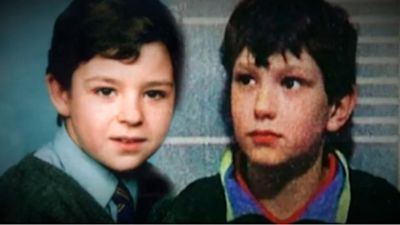
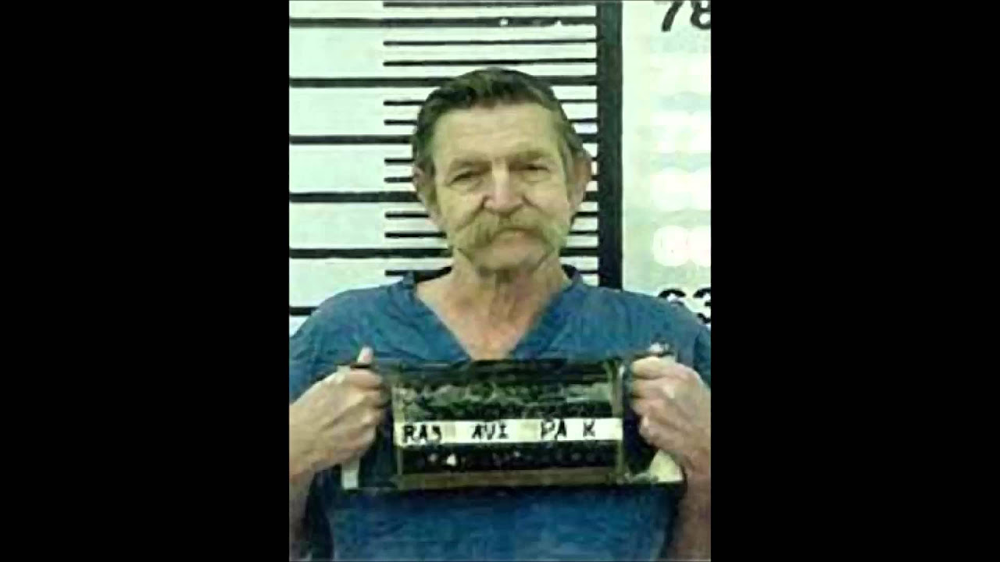
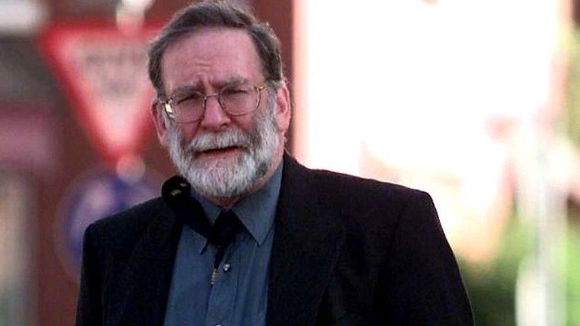
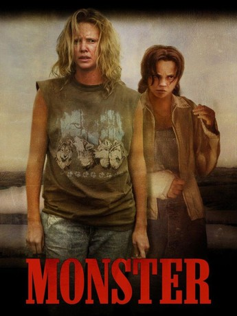
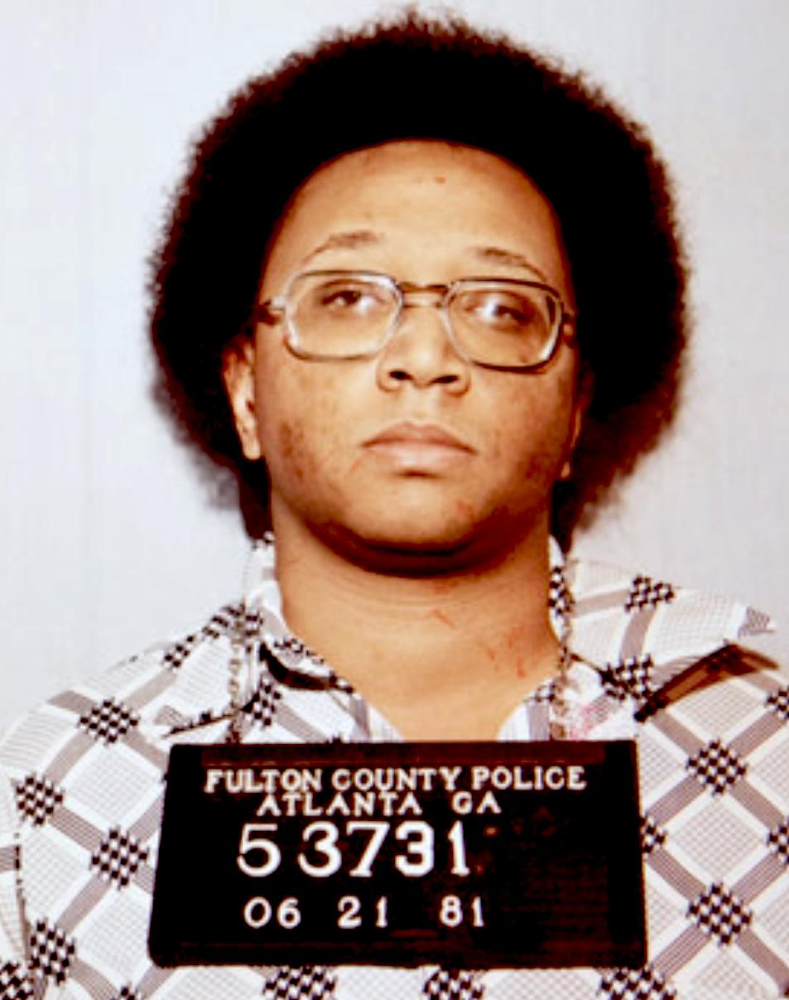
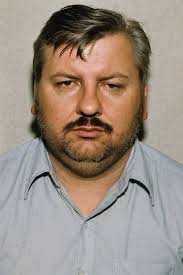

Serial Killers and True Crime
KILLER CINEMA
Serial Killer Cases
Featured Crime Cases

The Bulger Murder
Columbine High School Massacre
Albert Fish – The Gray Man
22 July
The Night Stalker
BTK-Killer
Ed Gein
Mary Ann Cotton
The-yorkshire-ripper

The-Toy Box Killer
Deciphering The Zodiac Killer
Ted Bundy American Boogeyman

Harold Shipman-Doctor Death
My Friend Dahmer 2017
Dahmer Full Series
The Railway Killers: John Duffy & David Mulcahay (Born To Kill)

MONSTER: Aileen Wuornos: America's First Female Serial Killer

Atlanta Child Murders

John Wayne Gacy
Edmund Kemper Co-Ed Killer
Gary Ridgway The Green River Killer
H.H. Holmes: America's First Serial Killer
The Alphabet Killer: Joseph Naso and His Chilling List of 10 Victims
Rex Heuermann Series Index: House of Secrets & Lost Girls Documentaries
Rex Heuermann Series Index: House of Secrets & Lost Girls Documentaries
Uncover the shocking true story of the Boston Strangler, a serial killer who terrorized 1960s Boston,
Uncover the chilling true story of Ted Bundy, a charismatic law student turned serial killer
Loosely based on the true crimes of Ed Gein, A Chilling Portrait of Madness and Necrophilia Released in 1974,
Featured Crime Cases
View More
üéß Enter the Serial Killer Audio Archive
Join the [Serial killers Movies and documentray's] Facebook Group!


.jpg)